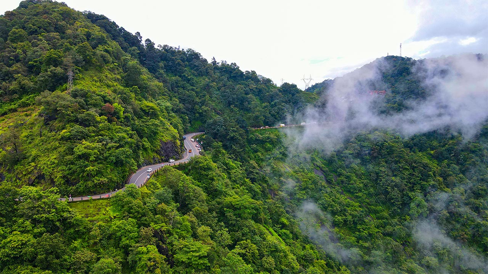

Wayanad is Kerala's best-kept secret. While Munnar gets all the fame, this highland district in the northern Western Ghats offers something arguably even more spectacular — deeper forests, fewer tourists, ancient caves, roaring waterfalls and wildlife encounters that feel genuinely wild. If you want the Kerala that most tourists miss, come to Wayanad.
Getting to Wayanad from Ernakulam
Wayanad is approximately 270 km from Ernakulam, taking around 5–6 hours by road. The most scenic route is via Kozhikode (Calicut) through the Thamarassery Ghat — 18 hairpin bends that are spectacular by day. Alternatively, the route via Mysore Road through Sulthan Bathery is faster. We recommend hiring a private vehicle from Ernakulam for full flexibility — our Innova Crysta or tempo travellers are ideal for the mountain roads.
1. Chembra Peak Trek
At 2,100 metres, Chembra Peak is the highest point in Wayanad and one of Kerala's most rewarding treks. The 5–6 hour round trip passes through shola forests, grasslands and — famously — a heart-shaped lake at around 1,800 metres. Trekking permits (₹300 per person) are available from the Forest Department office at Meppadi. Go with a guide — trails are not always marked. Best months: October to March.
2. Edakkal Caves
One of South India's most intriguing archaeological sites, Edakkal Caves contain Neolithic rock carvings dating back over 6,000 years — some of the oldest human inscriptions found in India. The caves sit at 1,200 metres above sea level, reached by a short but steep 1.5 km hike. Plan at least 2 hours here. Entry: ₹30 for adults.
3. Banasura Sagar Dam
India's largest earth dam and one of Asia's largest, Banasura Sagar Dam creates a magnificent reservoir studded with small forested islands. Boat rides through the islands are available for ₹100–200, and the surrounding area is perfect for a peaceful picnic. The dam is best visited at sunrise when morning mist hangs over the water.
4. Wayanad Wildlife Sanctuary
Divided into the Tholpetty and Muthanga ranges, Wayanad Wildlife Sanctuary is home to elephants, tigers, leopards, Indian bison (gaur) and over 200 bird species. Jeep safaris depart at 6:00 AM and 3:00 PM from both ranges. Tholpetty, bordering Karnataka's Nagarhole reserve, typically offers better wildlife sightings. Book safaris in advance during peak season.
5. Soochipara & Meenmutty Waterfalls
Wayanad has several spectacular waterfalls. Soochipara (also called Sentinel Rock Falls) is a three-tiered waterfall accessible via a 2 km forest trek — swimming in the pool at the base is allowed and highly refreshing. Meenmutty is larger and more dramatic but requires a longer 3 km hike through dense forest. Best visited after the monsoon (October–November) when water levels are highest.
Where to Stay in Wayanad
Wayanad has excellent eco-resort options, particularly in the Vythiri and Kalpetta areas:
- Vythiri Village Resort: Tree houses and cottages in a coffee estate — incredibly atmospheric.
- Pepper County: Boutique property with valley views and excellent Kerala food.
- Budget option: Several clean guesthouses in Kalpetta town from ₹800/night.
Best Time to Visit Wayanad
October to May is the best period. The post-monsoon months of October–November are particularly beautiful when everything is lush green and waterfalls are at full flow. Avoid heavy monsoon months (June–August) when trekking routes are closed and roads can be challenging.
Local tip: The tribal villages around Sulthan Bathery and Mananthavady offer fascinating cultural experiences — bamboo craft workshops, traditional honey collection and indigenous forest walks guided by Adivasi communities. Ask your Nature Green Holidays driver to connect you with a reputable tribal tourism programme.